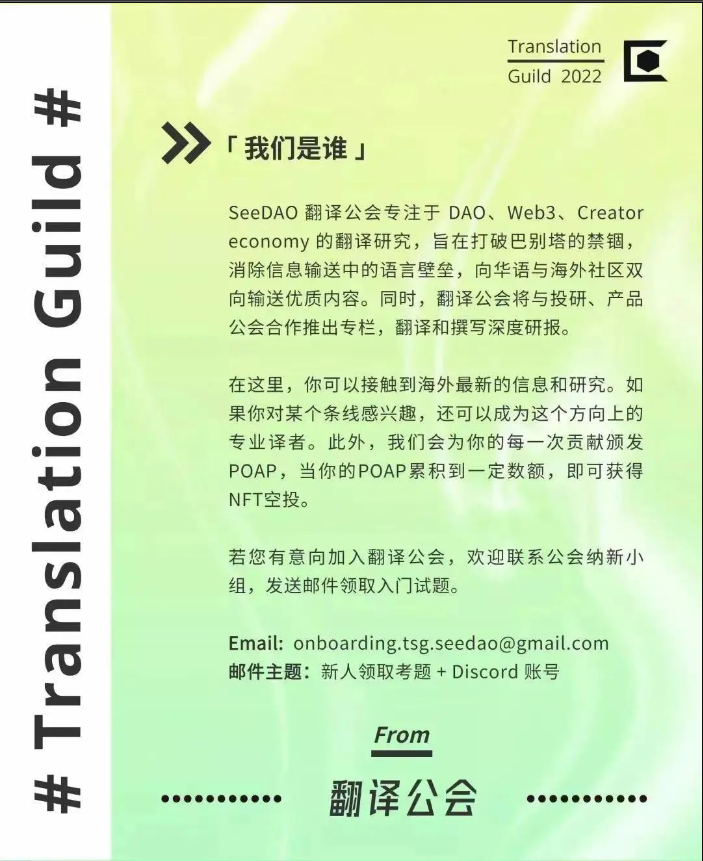

私人资本
虽然风险投资基金经常被拿来与传统的、链下的私人资本做比较，但或许更适合将 TradFi 比作 PIPE （公共股权私人投资）。无论你选择哪种类比方式，协议在 DeFi 中筹集资金通常都是利用机构投资基金。
目前习惯上的规定得相当简单：将 DAO 的治理代币以市场价格的一定折扣兑换成稳定币或是以太坊，折扣一般在 30% - 50% 的范围浮动。折扣听起来力度很大，因为它确实力度很大，但通常会有两年到四年不等的解锁期，其中还会包含一年的锁定期，所以对投资者来说这不一定是一笔非常划算的买卖。一方面，所有在去年五月以大幅折扣参与到 Lido 的 7000 万美元融资中的风险投资人可能对他们的这一决定十分满意。那些在同一时间资助了 POOL 稳定币多样化的投资人呢？他们可就没那么满意了。无论合适的折扣还是锁定期给投资者造成了什么样的困扰都让时间见分晓。但至少这个规定当今被广为接受为一种标准。

私人资本的优势
这在很大程度上取决于所涉及的具体的投资者，以及每个 DAO 作为一个社区所具有的价值。能够得到知名投资人投资，当然是有吹嘘资本的，并且该投资人的背书也是绝佳的营销素材。在 Galaxy Digital 官宣 2500 万投资 Luna 后的一周内，$LUNA 的币价上涨了约 100%。二者之间不一定是完全的因果关系，但可以说，这种给私人资本的特别折扣立刻得到了超额回报。
除了营销价值，（理论上）你还获得了一个长期的合作伙伴，他可以为你提供人脉关系、技术方案和额外的运营治理方面的建议。当然，他同时也是一个不会像散户那样迅速抛售你的代币的大股东 [2]。
跟所有事情一样，上述两个优势也是因投资者而异的，并非所有风投机构都具备相同的威望或营销价值，也并非所有的机构都是善于帮助、亲力亲为的合作伙伴。众所周知，在风险投资中并非所有的资本都是平等的。

私人资本的劣势
私人资本的劣势也很明显：代币持有者持有的价值会被市值显著稀释。在 DeFi 市场中会感到尤其痛苦，因为在 DeFi 领域可能你会有很多其他的筹集资金的选择。直截了当的说，在传统的投资领域中（私人或公开），根本没有在筹资时市值的差价已经被人卷走的情况发生。并不是说这种交易就会不公平，但也能理解为什么协议和社区对这种资金多元化的方式敬而远之了。
很显然，选择这种方式，就是选择了让利给资本以换取特定资本的合作关系、稳定性和营销价值。这就是交易。
公开拍卖
另一种不通过交易所或与风投机构谈判的方式就是简单的将你的部分资产公开拍卖，这实际上相当于一种零售加密货币版本的稀释后的公开发行 [4]。拍卖可以限制在现有的代币持有者中进行，也可以定向邀请潜在的新的代币持有者，或者根本不做限制。公开拍卖的魅力就在于，至少在某种程度上拍卖参与者与定价机制都由 DAO 决定。

公开拍卖的优势
公开拍卖有很多值得一提的你一定会喜欢的优势。DAO 不需要在自由市场缓慢地集合多元化资金，也不需要屈服于机构给出的价格，就获得了大量资金。虽然拍卖也需要一定折扣（这是必要的），但这种折扣远不及给到机构的折扣那么让你肉疼。拍卖本身还可以作为一种营销活动来推动协议被市场认知和使用，如果 DAO 选择将拍卖活动的时间与产品发布等事件结合在一起，这种营销便会更有价值。显然，大多数的自由市场拍卖也非常严格遵守了 DeFi 和更广泛的加密精神，几乎到了你和你的社区都格外热衷于此的地步。

公开拍卖的劣势
私募资本有一个巨大的负面因素（稀释成了一个被大打折扣的价格）需要考虑，与之不同的是，公开拍卖则有一堆小问题需要注意。
首先是运营活动的需求。公开拍卖的实现有赖于人群效应，拍卖的定价很大程度上取决于市场的需求，你希望筹集的资金数额越大，该效应越强烈。其次是大量出售国库代币释放的负面信号 —— 这基本上是任何募资战略的真实情况（即，“既然你对你们的代币那么有信心为什么要卖呢？”）。由于大规模销售本身依赖于上述的运营，所以在这种情况下拍卖会受到进一步影响。换句话说，通过表明筹资的意图和理由（即，“我们本次筹资是为了资助 X、Y 和 Z 计划，我们对该计划十分兴奋，你也应该和我们一样，因为……”），就可以弱化些大规模出售代币的负面影响。
最后，交易所外的公开拍卖需要一定的折扣才可能实现（不然参与者会直接在交易所购买），因此至少需要一定程度的锁定条款来避免价格套利。鉴于这一事实，对大规模锁定事件所带来的负面影响以及由拍卖结构和条款所带来的抛售压力的提前考量十分重要。可以通过将锁定条款作为拍卖变量来弱化这种影响，或给所有参与者具象化在初始归属期后的锁仓规划来缓解这种压力。现实情况是， 散户投资者永远不会像机构投资者一样成为长期、稳定的代币持有者，你的拍卖条款需要考虑到这一点。
显然，构建公开代币拍卖的方法有很多种，今天我们来思考其中三种。为了说明这些差异，让我们来看一个虚构的拍卖活动中的一组竞标者。另外，让我们假设一个协议正在寻求筹资 25 万美元稳定币，该代币当前市场价格为 $50。
为了构建一个假设的“需求”曲线，我创建了 100 个假想的拍卖参与者，并随机生成了竞拍价格，$35作为竞拍的最低价格，$45 (低于市场价格 10% ) 作为竞拍的最高价格。我还随机生成了假想的代币购买数量，最少为 50 个代币，最多为 250 个。最后，我把期望的筹资金额设定为 25 万美元，并用每个潜在的投标价格除以它，来为我们的拍卖创建一个理论上的“供应”曲线。结果如下：
请注意，这不是一个正常的供应曲线（因此有了上面的引述），因为我们关注的是一个单一事件和一个固定的募资数字，而不是交易所的供应量和需求量。正常的供应量显然会随着价格的上涨而增加，而不是减少。
既然已经确定了范围，那么让我们来谈谈三种不同的拍卖类型并将它们分别与我们的竞标者相结合。这里要强调的非常重要的一点是：就像任何一个经济模型一样，这个演练非常理想化，而且假定了我们的竞标者是理性的，在价格发现方面的行为是有效的。会有很多行为（例，FOMO行为）和技术现状（例，Gas价格）导致我们这里的推断不完善，但我认为，当思考各种拍卖结构在影响价格方面起到的作用时，这项演练既有意思又有指导意义。随着加密货币社区的壮大，以及加密市场最终的效率提高，这一点将变得尤为正确。
方法 #1：批量拍
在批量拍中 [5]，DAO 事先设定了美元定价（或一个固定的代币售卖数量）、最低价格，和拍卖活动的竞价期。竞标者可以在竞价期间竞拍（包括设置购买数量和个人最高限价）。综合所有竞价考虑，代币最终出售的清算价格将是美元定价的最低价格（也就是投标价格和卖出金额的相交点），高于该价格的投标人也会以清算价格获得回报（用剩下的代币或者美元定价分配给按这个最低价竞价的投标人）。
通过我们之前创建的供需曲线，可以看出建立在这种结构之上的拍卖活动在理论上是这样结束的：
如上所述，批量拍的优点在于 DAO 拥有对他们重要的变量的掌控权 — 你可以灵活地专注于稳定筹集的美元价值（或是随心设置固定的代币分配数量），你也可以轻松地设置一个最低价格。假设有足够多的需求可以同时满足以上两个变量，一个批量拍就可以同时完成在个人层面上的价格发现、将定价偏好分组、并得出一个有效“公平”的价格、将 DAO 代币按供需曲线的交汇点进行合理分配。
方法 #2：流动拍
在流动拍 [6]中，设定了固定的代币数量和拍卖竞价期。在竞价期间，参与者能够自由地将资金存取到一个代表了他们的“竞价”的质押池里。问题是，光靠存入的资金不能获得一个理想的价格回报，池子里的存款数量才是决定价格的关键。参与者可以看到池子的金额大小和当前隐含价格，如果价格低于或高于他们愿意支付的价格，竞标者可以选择随时进入或退出池子。拍卖的代币持续从池子里的沉淀资金线性分配。如果你觉得难以理解，那是因为这并不是一个简单直白的概念 — Locke （这种拍卖形式的推进者）制作了一个简单、实用的视频来解释这种拍卖形式是如何工作的。
让我们假设在拍卖中，预留了 6500 个代币在竞价/质押期间进行持续拍卖。同样，我们假设所有的竞价者的行为都是有效且理智的（这在一般情况下都是个很大的假设，在今天的加密货币圈尤为如此）。无论如何，我们进行了一次假想的竞标，结果大概会是这样的：
从价格发现的角度来看，这种拍卖形式的结果与批量拍的结果基本上是保持一致的。至少在理论上，当拍卖的价格发现发生在团体层面上时，不管具体的拍卖机制是什么，都会得到一个众包价格结果，即供应量满足需求量。这种特殊的竞拍结构的优点就在于它比批量拍更透明（即，参与者可以看到当前的定价条款，并根据自身情况选择进场、退场的时机）。竞标者们显然很享受这种程度的透明/权利，而当越来越多的竞标者参与到拍卖池的时候，这种方式从理论上讲也能满足感知需求的产生（拓展：FOMO）。也就是说，如果你还没有准备好并愿意做一个稳定的代理人、在你的拍卖中做大量的质押以保持价格稳定、预防不顺利的进展，那么透明极有可能产生不好的结果。
流动拍的主要缺点是控制。与其他拍卖形式不同，DAO 必须根据固定数量的代币来设置拍卖中的供应量（见，上图中的红色直线），而不能设置固定的美元价值。更为复杂的是，如果 DAO 希望设定最低价格，主要方式是在自己的拍卖中进行质押，那么这就有可能导致 DAO 又获得了大量自己的治理代币带回到国库中。DAO 当然可以通过更多的拍卖活动来消化这些代币，但你自己质押的仓位可能为你带来的差异完全取决于你的拍卖中产生的需求，因此或多或少是不可控的。
方法 #3：荷兰拍
在荷兰拍中，社区事先设定了固定数量的代币或美元价值的资本和拍卖的竞价期。在拍卖的进程中，拍卖条款缓慢地发生改变，并且随着拍卖持续的时间增长，拍卖条款对参与者也越发友好。但问题就是，一旦拍卖的代币份额都被拍下，拍卖就结束了。DAO 可以设置一个“固定锁定”或“固定价格”或随机设置一些组合类的拍卖形式。在固定锁定的情况下，竞标一般从当前的市场价格开始，然后随着时间的推移线性下降到某个设定的折扣（5%，10%，设置者随意设定）。竞标者可以在他们可接受的任何价格段选择购买，但都要有一个设定好的锁定期以避免竞拍者立刻价格套利。反之，在“固定价格”的情况下，折扣价是事先定好的，锁定时间在拍卖过程中是浮动的（在前期较长，随后慢慢变短）。
让我们假设一个浮动价格适用于我们的供需曲线、有“固定锁定期”的荷兰拍，说明了与其他拍卖结构的巨大差异：
请注意，这种结果显然体现了更多的事情（拍卖完全是“盲目”进行的，有足够的参与者以避免串通等），但由于荷兰拍的价格发现和交易是单独固化的而不是在组织层面进行的，理论上协议是可以通过这种形式的拍卖捕获最大可能的价值的。
尽管如此，这种形式肯定有它的负面含义，因为在这种拍卖结构下，你显然是以不同的价格向不同的人出售相同的代币（这种定价方式的具体经济学术语就是“价格歧视”，且此种方式与航空公司的关系最为密切，这应该能说明一些问题）。一个毫无感情的经济学家或许会告诉你，这种负面含义是无稽之谈 — 每个人都在以他们愿意支付的价格达成交易，而且还是在打了折的情况下！我并不认识太多加密货币圈没有感情的经济学家 — 我的猜测是，虽然这种方式更高效，对你目前的代币持有者也更有利，但如果你特别注重公众关系，这并不一定是一个特别好的办法。
总结
当 DAO 决定使他们的国库多元化并募集资金时，在资本来源和定价结构方面有许多不同的变量需要考量。这并不是一个极尽详细的清单，但希望在将来协议或社区做这方面的打算时，可以考虑到上述的这些利与弊。


